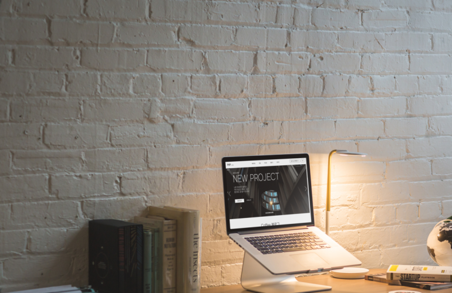
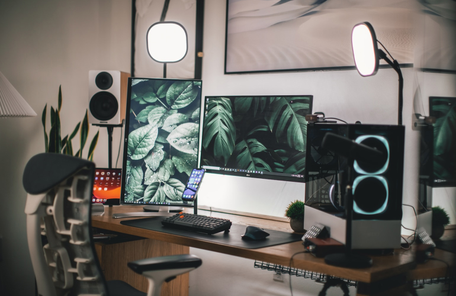
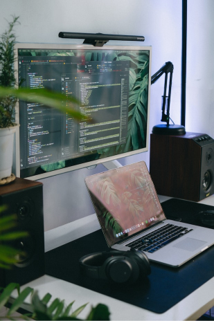

portfolio
어떤 일이라도 노력하고 즐기면 그 결과는 빛을 바란다고 생각합니다. 신입의 열정과 도전정신을 깊숙히 새기며 배움에 있어 겸손함을 유지하며 세부적인 곳까지 파고드는 개발자가 되겠습니다.
개발자 김은수i am
frontend
developer
안녕하세요. 프론트엔드를 꿈꾸는 김은수입니다.
저의 포트폴리오에 오신 것을 환영합니다. 디자인에 관심이 생겨 웹반응형UI/UX 웹 퍼블리셔과정을 배우게 되었는데 웹페이지에서 동적인 것을 구현할 수 있는 프론트엔드 개발에 점차 흥미를 느끼게 됐습니다. 새로운 기술들이 끊임없이 나오는 프론트엔드에서 최신 트렌드에 뒤쳐지지 않기 위해 검색을 통해 동향을 파악하고 각각의 기술들의 장단점을 확실하게 알고 원하는 기능이필요할 때 바로 배우고 적용할 수 있는 개발자가 되겠습니다. 공들여 만든 프로젝트와 제 노력의 결과물을 보실 수 있습니다. 편안하게 보시며 즐겨주세요. 감사합니다.
저의 포트폴리오에 오신 것을 환영합니다. 디자인에 관심이 생겨 웹반응형UI/UX 웹 퍼블리셔과정을 배우게 되었는데 웹페이지에서 동적인 것을 구현할 수 있는 프론트엔드 개발에 점차 흥미를 느끼게 됐습니다. 새로운 기술들이 끊임없이 나오는 프론트엔드에서 최신 트렌드에 뒤쳐지지 않기 위해 검색을 통해 동향을 파악하고 각각의 기술들의 장단점을 확실하게 알고 원하는 기능이필요할 때 바로 배우고 적용할 수 있는 개발자가 되겠습니다. 공들여 만든 프로젝트와 제 노력의 결과물을 보실 수 있습니다. 편안하게 보시며 즐겨주세요. 감사합니다.
I believe that if you work hard at anything and enjoy it, the result is hopeful.
I will become a developer who deeply engraves the passion and challenging spirit of newcomers, maintains humility in learning, and delves into details.
It contains the results of the work that I studied and made while dreaming of becoming a front-end developer. There are still many things to learn, but I want to be a person who grows with the accumulating experience.
webstandard
responsive
script
script
php site

site
react site

react site


I am
frontend
thanks
새로운 도전을 하고 싶어 시작한
코딩이 삶의 많은 부분을 변화 시켰습니다.
배움에 있어서 늘 겸손한 자세로 피드백을 받아들이고,
포기하지 않고 끈기와 인내로 성장해 나아가는 개발자가
되는것이 저의 목표 입니다. 실무에서 빠른 속도와 전문적인지식과 함께 소통할 수 있는 개발자가 되겠습니다. kes73640@naver.com
코딩이 삶의 많은 부분을 변화 시켰습니다.
배움에 있어서 늘 겸손한 자세로 피드백을 받아들이고,
포기하지 않고 끈기와 인내로 성장해 나아가는 개발자가
되는것이 저의 목표 입니다. 실무에서 빠른 속도와 전문적인지식과 함께 소통할 수 있는 개발자가 되겠습니다. kes73640@naver.com
열정
밝은 에너지로 동료들과 협동하며 매력적인 코딩, 깔끔한 동적 구현을 해내고 마는 프론트엔드, 김은수가 되도록 하겠습니다.
배움
Html, CSS, Javascript를 배웠지만 부족함을 느껴 스터디를 통해 리액트, php, 뷰 등을 배우며 적극적으로 개발에 대한 역량을 키우고 있습니다.
노력
열정을 쏟을 뿐 아니라 능력 있는 개발자로 도약하기 위해 코딩영상을 보며 구현하거나 강의를 들으면서 하루 8시간 이상 코딩합니다.
portfolio